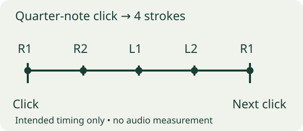

Define what one BPM number means before comparing attempts
A record that says “80 BPM” is incomplete. State what the metronome click represents and how many notes you intend between clicks. In this original exercise, each click is a quarter-note beat and you play four evenly spaced sixteenth-note strokes per click: R R L L. One group occupies one click interval.
Vic Firth’s Double Stroke Open Roll page provides the rudiment, a slow-fast-slow breakdown and a lesson from Dr. John Wooton. Use that primary demonstration to understand the pattern. The observation protocol here is our worksheet, not an official grade or a replacement for technique instruction.
Use the same practice surface and sticks for the comparison. Write down an intentional accent if there is one; otherwise you may mistake your planned accent for a defect. Start at a pace where you can hear individual strokes. Keep volume comfortable, and stop if playing causes pain or unusual discomfort.

Worked log: a faster number hides a quieter second stroke
A fictional drummer compares two settings on the same pad with the same four-notes-per-click pattern. At 60 BPM, both hands sound even to the player. At 66 BPM, the player hears the second left stroke fade and the following right stroke arrive early. These are subjective observations, not millisecond or decibel measurements.
| Attempt | Click and subdivision | Observation | Decision |
|---|---|---|---|
| A | 60 BPM; quarter click; 4 notes/click | R1/R2 similar; L1/L2 similar; groups even | Keep as comparison reference |
| B | 66 BPM; same setup | L2 quieter; next R1 sounds early | Repeat slowly enough to isolate that pair |
| C | 60 BPM; same setup | L2 audible again; spacing feels even | Record return condition; do not claim 66 clean |
Listen once for spacing and once for the balance within each pair. If you cannot distinguish which stroke changes, record “unclear” and seek a slower comparison or a teacher’s feedback. Do not replace uncertainty with a perfect score.
At 60 BPM with four notes per click, the intended total is 240 strokes per minute; at 66 it is 264. That arithmetic describes the exercise, not measured performance. If you instead play two notes per click, the same BPM gives a different note rate. Record that change rather than comparing it as if nothing changed.
Separate an observation from the next practice choice
Write one concrete issue per attempt: R2 quieter than R1, L2 crowded against L1, or the change from left pair to right pair rushed. “Bad doubles” is too broad to guide the next attempt. If several things change, simplify the comparison until you can describe one of them.
A short recording can help you listen again if you choose to make one, but a phone microphone and automatic level control do not provide calibrated loudness values. Changing distance or recording settings can alter apparent balance. Keep a note of those changes and avoid turning waveform size into a precise technique score.
Choose pass, repeat or a slower attempt based on the quality goal you set. A cleaner return at the slower setting is useful evidence; it does not prove the faster setting has improved. Keep that distinction in the history so tomorrow’s start is based on something you can reproduce.
RudiRise supports the tempo loop; you judge the playing
RudiRise’s current listing describes an audible/visual metronome, automatic advancement after 16 beats, pass/repeat/back-off controls and saved clean-tempo history. The free plan includes eight foundational rudiments; Premium unlocks all 40, custom ladders and full history. Double Stroke Open Roll is in the current source’s free set, but verify the installed version.
The app does not listen through a microphone to grade your doubles. You make the quality decision. The CSV provides per-stroke observations that are separate from the app’s saved history; no import is promised. The listing names a 2 BPM back-off control, not automatic detection that a stroke is too soft.
We publish RudiRise, which is independent and not endorsed by PAS or Vic Firth. For a full short session, use the linked rudiment routine. For a broad speed plateau, use the plateau guide. Here the task is narrower: identify how the two strokes of each hand change under a controlled comparison.
If the method fits your task, explore RudiRise’s listed features on an iPhone. Check current features and plans before downloading.
See RudiRise for iOSDownload the free worksheet
Use the CSV in Numbers, Excel or a spreadsheet editor. Three fictional observations and a blank row. No measured audio, medical guidance or guaranteed tempo gain. Replace them with your own observations. The CSV is separate from the app and no email is required.
Questions answered
Does a higher BPM prove better doubles?
No. It is comparable only with the same click unit, subdivision and intended quality. Record the actual issue and your decision.
Does RudiRise listen and mark my strokes?
No microphone grading is established. You choose pass, repeat or back off based on your playing.
What if the strokes are too fast to distinguish?
Record the uncertainty, slow the comparison or ask a qualified teacher for feedback. Do not invent an evenness score.
Continue with RudiRise on iOS
Use the App Store listing to check compatibility, privacy information and current plan terms. A free download may offer paid features.
Download RudiRise for iOSSources and product details
- Vic Firth: Double Stroke Open RollPrimary rudiment demonstration and lesson; checked October 16, 2026. Our log and sample tempos are original examples.
- RudiRise on the App StoreCurrent US App Store product description; checked October 16, 2026.
Editorial method: primary guidance, a current Apple listing, an original worked example and an independent critique. No search ranking, install or outcome result is claimed.